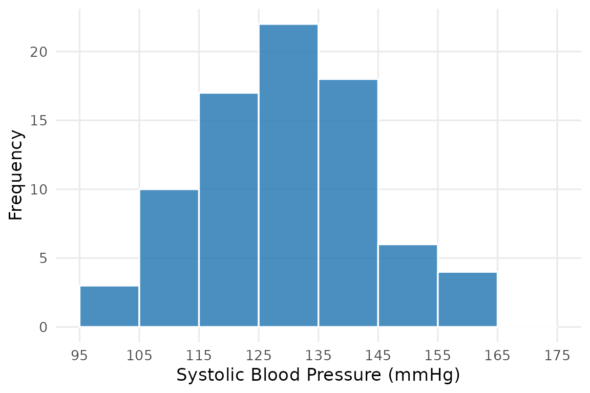
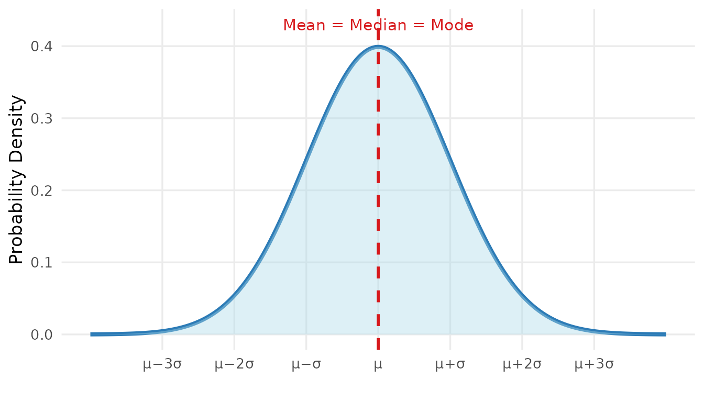
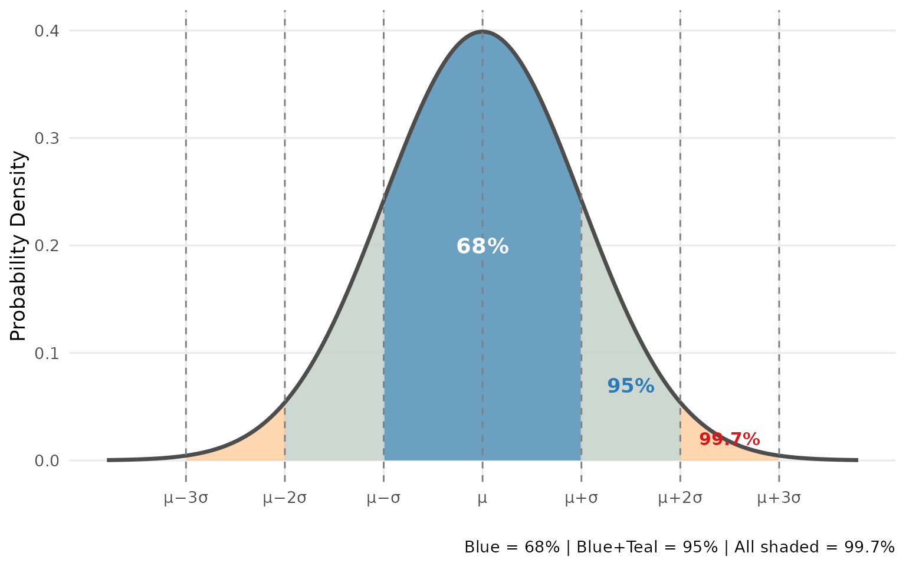
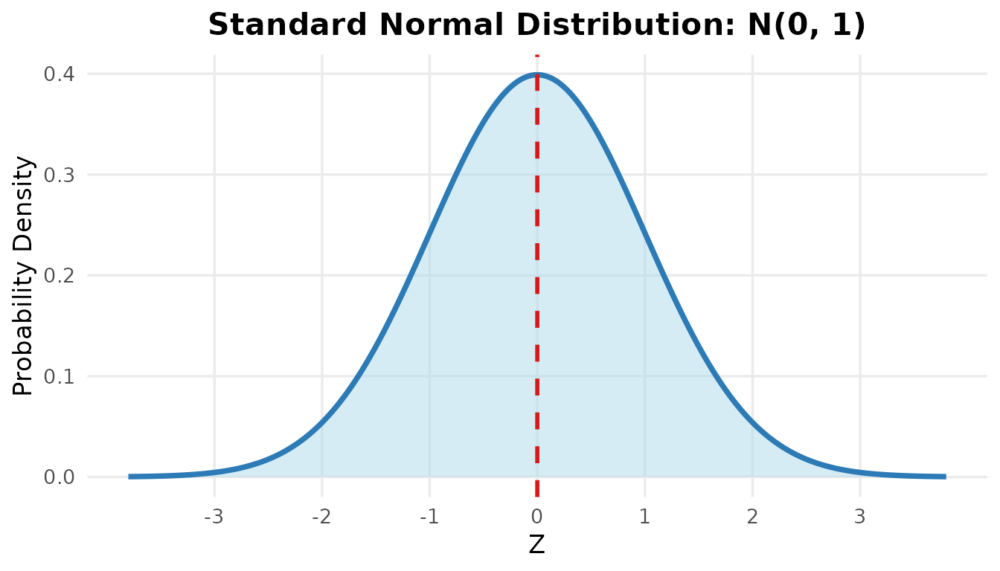
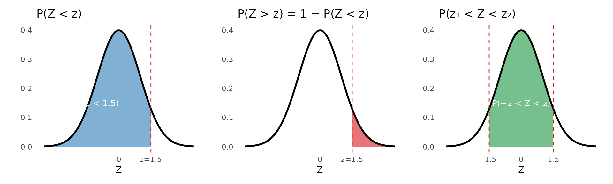

| Blood Type | Frequency (f) | Relative Frequency (f/n) | Percentage |
|---|---|---|---|
| A | 76 | 76/200 = 0.38 | 38% |
| B | 54 | 54/200 = 0.27 | 27% |
| AB | 30 | 30/200 = 0.15 | 15% |
| O | 40 | 40/200 = 0.20 | 20% |
| Total | 200 | 200/200 = 1.00 | 100% |
Random Variable and Probability Distribution
Introduction
Frequency Distributions
What Is a Frequency Distribution?
A frequency distribution is a systematic way of organizing raw data into a table that shows how often each value (or range of values) occurs.
It answers the simple question: “How many times does each value appear?”
Frequency Distribution for Categorical Data
For categorical variables, we simply count how many observations fall into each category.
Relative frequency = \(\dfrac{f}{n}\), where \(f\) is the count for that category and \(n\) is the total number of observations.
Frequency Distribution for Continuous Data
For continuous variables, we group values into class intervals (also called bins) and count how many observations fall in each interval.
Steps to construct a frequency distribution table:
- Find the range = Maximum − Minimum
- Choose the number of classes (typically 5–10)
- Calculate class width = \(\dfrac{\text{Range}}{\text{Number of classes}}\) (round up)
- List the class intervals and count observations in each
Cumulative frequency tells us how many observations fall at or below the upper boundary of each class — useful for answering questions like “What proportion of patients have SBP below 140 mmHg?”
Visualizing Frequency Distributions
A frequency distribution table can be visualized as a histogram, where the height of each bar represents the frequency of that class interval.

The shape of the histogram is important — it tells us about the distribution of the data, which leads us to the next section.
The Normal Distribution
What Is the Normal Distribution?
The normal distribution (also called the Gaussian distribution or bell curve) is the most important probability distribution in statistics.
Many biological and clinical measurements naturally follow — or approximately follow — a normal distribution:
- Adult height and body weight
- Blood pressure in a healthy population
- Serum cholesterol levels
- Birth weight of newborns

Key Properties of the Normal Distribution
A normal distribution is completely described by just two parameters:
| Parameter | Symbol | Meaning |
|---|---|---|
| Mean | \(\mu\) | Center of the distribution (peak of the bell) |
| Standard deviation | \(\sigma\) | Width of the bell — larger σ = wider, flatter curve |
Key properties:
- Symmetric around the mean — the left and right halves are mirror images
- Mean = Median = Mode — all three are equal and located at the center
- The total area under the curve = 1 (representing 100% of all probability)
- The curve extends infinitely in both directions but never touches the x-axis
The 68–95–99.7 Rule (Empirical Rule)
One of the most useful facts about the normal distribution is how much of the data falls within 1, 2, or 3 standard deviations of the mean.

The Standard Normal Distribution and Z-Score
The Z-Score
Different normal distributions have different means and SDs. To compare values across different distributions, we standardize them using the Z-score:
\[z = \frac{x - \mu}{\sigma}\]
Where:
- \(x\) = the observed value
- \(\mu\) = the population mean
- \(\sigma\) = the population standard deviation
- \(z\) = the number of standard deviations \(x\) is away from the mean
A positive Z means the value is above the mean; a negative Z means it is below the mean.
The Standard Normal Distribution
When we convert all values to Z-scores, the resulting distribution is called the standard normal distribution, with:
\[\mu = 0 \quad \text{and} \quad \sigma = 1\]
This is written as \(Z \sim N(0, 1)\).

Finding Probabilities Using the Z-Table
The Z-table (also called the standard normal table) gives us the area to the left of any Z-score — which equals the probability that a randomly selected observation falls below that value.
| 0.00 | 0.01 | 0.02 | 0.03 | 0.04 | 0.05 | 0.06 | 0.07 | 0.08 | 0.09 | |
|---|---|---|---|---|---|---|---|---|---|---|
| 0.0 | 0.5000 | 0.5040 | 0.5080 | 0.5120 | 0.5160 | 0.5199 | 0.5239 | 0.5279 | 0.5319 | 0.5359 |
| 0.1 | 0.5398 | 0.5438 | 0.5478 | 0.5517 | 0.5557 | 0.5596 | 0.5636 | 0.5675 | 0.5714 | 0.5753 |
| 0.2 | 0.5793 | 0.5832 | 0.5871 | 0.5910 | 0.5948 | 0.5987 | 0.6026 | 0.6064 | 0.6103 | 0.6141 |
| 0.3 | 0.6179 | 0.6217 | 0.6255 | 0.6293 | 0.6331 | 0.6368 | 0.6406 | 0.6443 | 0.6480 | 0.6517 |
| 0.4 | 0.6554 | 0.6591 | 0.6628 | 0.6664 | 0.6700 | 0.6736 | 0.6772 | 0.6808 | 0.6844 | 0.6879 |
| 0.5 | 0.6915 | 0.6950 | 0.6985 | 0.7019 | 0.7054 | 0.7088 | 0.7123 | 0.7157 | 0.7190 | 0.7224 |
| 0.6 | 0.7257 | 0.7291 | 0.7324 | 0.7357 | 0.7389 | 0.7422 | 0.7454 | 0.7486 | 0.7517 | 0.7549 |
| 0.7 | 0.7580 | 0.7611 | 0.7642 | 0.7673 | 0.7704 | 0.7734 | 0.7764 | 0.7794 | 0.7823 | 0.7852 |
| 0.8 | 0.7881 | 0.7910 | 0.7939 | 0.7967 | 0.7995 | 0.8023 | 0.8051 | 0.8078 | 0.8106 | 0.8133 |
| 0.9 | 0.8159 | 0.8186 | 0.8212 | 0.8238 | 0.8264 | 0.8289 | 0.8315 | 0.8340 | 0.8365 | 0.8389 |
| 1.0 | 0.8413 | 0.8438 | 0.8461 | 0.8485 | 0.8508 | 0.8531 | 0.8554 | 0.8577 | 0.8599 | 0.8621 |
| 1.1 | 0.8643 | 0.8665 | 0.8686 | 0.8708 | 0.8729 | 0.8749 | 0.8770 | 0.8790 | 0.8810 | 0.8830 |
| 1.2 | 0.8849 | 0.8869 | 0.8888 | 0.8907 | 0.8925 | 0.8944 | 0.8962 | 0.8980 | 0.8997 | 0.9015 |
| 1.3 | 0.9032 | 0.9049 | 0.9066 | 0.9082 | 0.9099 | 0.9115 | 0.9131 | 0.9147 | 0.9162 | 0.9177 |
| 1.4 | 0.9192 | 0.9207 | 0.9222 | 0.9236 | 0.9251 | 0.9265 | 0.9279 | 0.9292 | 0.9306 | 0.9319 |
| 1.5 | 0.9332 | 0.9345 | 0.9357 | 0.9370 | 0.9382 | 0.9394 | 0.9406 | 0.9418 | 0.9429 | 0.9441 |
| 1.6 | 0.9452 | 0.9463 | 0.9474 | 0.9484 | 0.9495 | 0.9505 | 0.9515 | 0.9525 | 0.9535 | 0.9545 |
| 1.7 | 0.9554 | 0.9564 | 0.9573 | 0.9582 | 0.9591 | 0.9599 | 0.9608 | 0.9616 | 0.9625 | 0.9633 |
| 1.8 | 0.9641 | 0.9649 | 0.9656 | 0.9664 | 0.9671 | 0.9678 | 0.9686 | 0.9693 | 0.9699 | 0.9706 |
| 1.9 | 0.9713 | 0.9719 | 0.9726 | 0.9732 | 0.9738 | 0.9744 | 0.9750 | 0.9756 | 0.9761 | 0.9767 |
| 2.0 | 0.9772 | 0.9778 | 0.9783 | 0.9788 | 0.9793 | 0.9798 | 0.9803 | 0.9808 | 0.9812 | 0.9817 |
How to use the table: To find \(P(Z < 1.23)\), look at row 1.2 and column 0.03 read off the value.
Common Z-Table Probability Rules

Key Takeaways
Examples
Example 1: Constructing a Frequency Distribution Table
The following are the ages (in years) of 20 patients:
\[45, 62, 38, 55, 71, 48, 60, 33, 52, 67,\] \[41, 58, 74, 50, 65, 44, 57, 69, 36, 53\]
Construct a frequency distribution table using 5 class intervals.
Example 2: Applying the Empirical Rule
The systolic blood pressure (SBP) of adults in a community follows a normal distribution with mean = 125 mmHg and SD = 14 mmHg.
(a) Between what two values does the SBP of the middle 95% of adults fall?
(b) What percentage of adults have SBP above 153 mmHg?
Example 3: Using Z-Scores and the Z-Table
Body weight of adult males in a region is approximately normally distributed with mean = 70 kg and SD = 10 kg.
(a) What is the probability that a randomly selected adult male weighs less than 85 kg?
(b) What is the probability that he weighs more than 55 kg?
(c) What is the probability that he weighs between 60 and 80 kg?
Exercises
End of Chapter 3